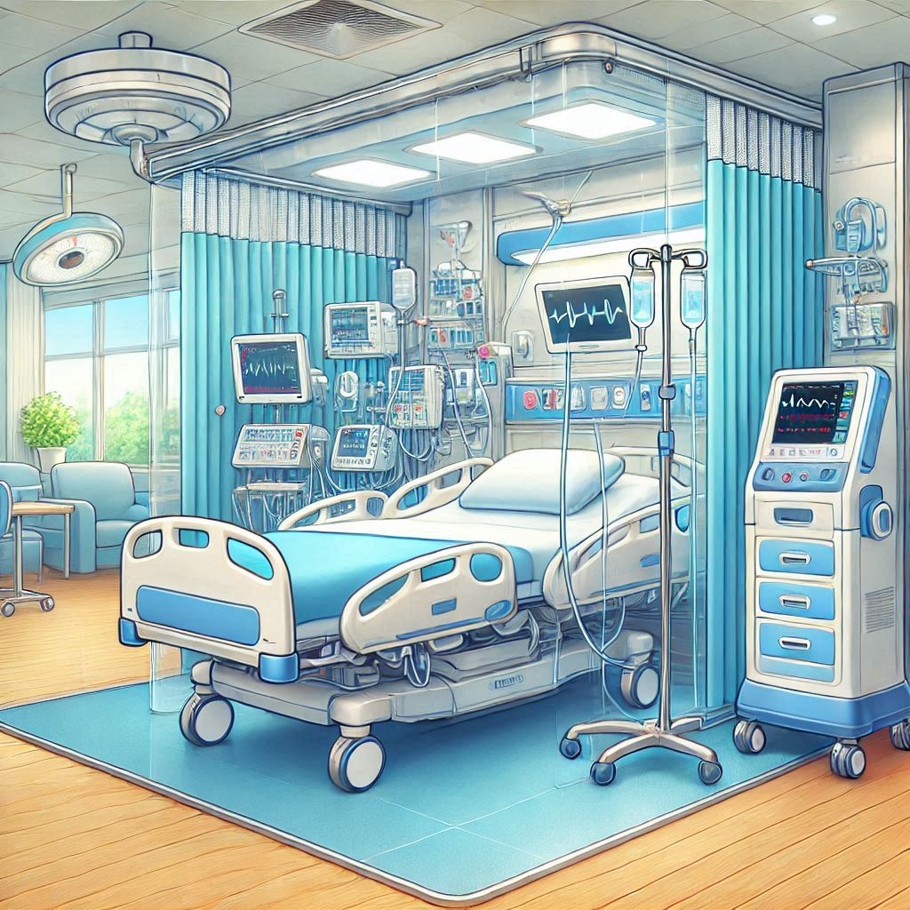
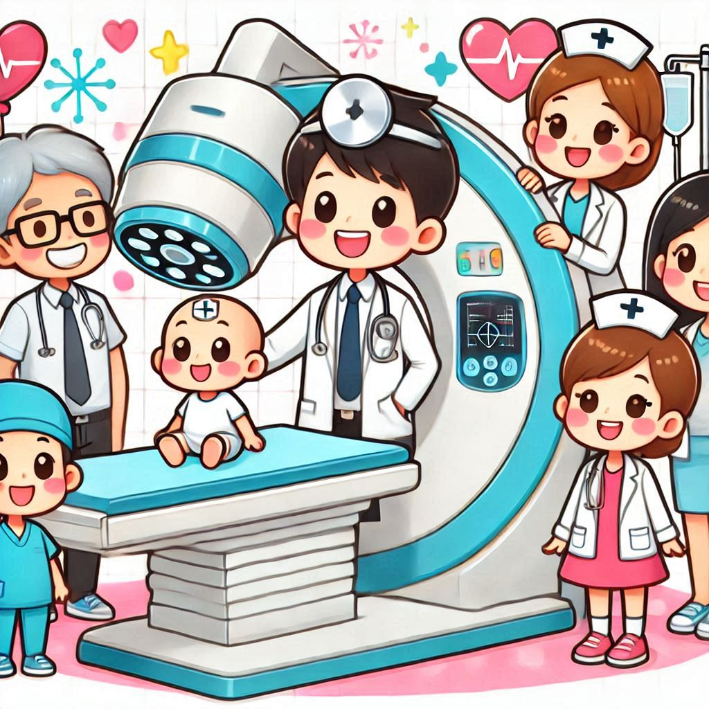

Our ICU with Laminar Airflow Systems is designed to deliver world-class critical care while maintaining the highest standards of hygiene and infection control.
The Labour Room at Evergreen Wellness Hospital is designed to ensure a safe, comfortable, and supportive environment for expectant mothers and their newborns.


C-Arm Machine is a critical component of our imaging and surgical capabilities, high-resolution X-ray imaging during complex medical procedures.